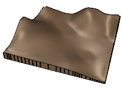

Wo befindet sich dieser Befehl?
laGelände
Symbol:
Werkzeugleiste: Lands-Objekte / Lands-Gelände

Menü:
Lands-Design-Gelände sind topographische Polygonnetze, die durch Hochziehen einer Fläche aus 3D-Kurven, Konturlinien oder Punktwolken erzeugt wurden.
Durch Ausführen des Befehls laGelände wird der Einfügedialog für Gelände geöffnet. Dieser Dialog zeigt die grundlegenden Optionen des Geländeobjekts auf zwei Reitern an.
Vorgehen:
Das Geländeobjekt wird im Modell erzeugt.

Einfügedialog für das Geländeobjekt.

Gelände können anhand verschiedener Arten von Eingabedaten erzeugt werden.
Gelände haben genauso viele Kontrollpunkte wie die zu ihrer Erzeugung verwendeten Kurven, und die zur Ausführung von Operationen auf Geländen (z.B. die Befehle Geländelücke hinzufügen oder Gelände-Auftrag und -Abtrag hinzufügen etc.) verwendeten Kurven. Außerdem erscheint ein Kontrollpfeil zum Verschieben neben jeder dieser Kurven, womit die gesamte Kurve verschoben werden kann.
Geländekontrollpunkte werden bei ihrer Einzelauswahl automatisch aktiviert. Um einen oder mehrere Gelände-Kontrollpunkte zu aktivieren, wählen Sie einfach das Gelände aus und starten Sie den Befehl PunkteEin (oder drücken Sie F10). Um die Punkte zu deaktivieren, drücken Sie ESC oder starten Sie den Befehl PunkteAus.
Die zum Erzeugen des Geländes verwendeten Geometrie-Kontrollpunkte können einzeln im Reiter Eingabedaten deaktiviert werden, und zwar im Bearbeitungsbereich des Bearbeitungspanels.

Die Gelände-Einfügungsoptionen und -Parameter sind in unterschiedliche Reiter aufgeteilt und über verschiedene Dialoge abrufbar:
Allgemeine Attribute für das Gelände-Objekt: Name, Farbe, Code und Stichwörter.
Erzeugung: Lands Design verwendet die Methode der Delaunay-Triangulation um Gelände zu erzeugen. Es handelt sich hierbei um einen beliebten Algorithmus zur Geländeerzeugung, basierend auf der Erzeugung einer optimalen Triangulation mit den Punkten, deren Höhenwert bekannt ist.
Gelände können entweder durch direkte Verwendung der Triangulationsseiten erzeugt werden oder durch Anpassung eines Rasters an die nach Abschluss des Triangulationsvorgangs erhaltene Form, dies zum Erhalt einer glatten Oberfläche.
Gerasterte Fläche nach Triang. geformt: Bei Aktivierung dieser Option können Sie folgende Parameter steuern:
Basishöhe:
Dieser Reiter ist in zwei Bereiche geteilt. Im linken Bereich erscheint die Liste der Eingabedaten (Kurven oder Punkte), die zur Erzeugung des Geländes und für die zur Geländemodifizierung ausgeführten Operationen verwendet werden. Im rechten Bereich erscheinen die für die jeweilige Auswahl zur Verfügung stehenden Parameter.
Jede Kurve oder Operation kann einzeln ausgewählt und von der Liste entfernt werden, worauf das Gelände neu berechnet wird.
Höhenlinienabstand: zwei Optionen sind zur Erzeugung der Gelände-Höhenkurven für die 2D-Darstellung verfügbar:
Aussehen: 2D-Anzeigeeinstellungen für die Gelände-Höhenkurven. Sie können indexierte Höhenlinien alle "X"-Anzahl von Höhenlinien definieren, Text hinzufügen und ihnen unterschiedliche Linieneigenschaften zuweisen.
Dies sind die Bearbeitungsoptionen für das Geländeobjekt, verfügbar im Bearbeitungsbereich des Bearbeitungsfensters:
Alle Befehle zur Erzeugung, Bearbeitung und Ausführung von Operationen auf Geländen sind in der Lands-Terrain-Werkzeugleiste zu finden.
Lands Design bietet verschiedene gleichzeitige 2D- und 3D-Darstellungen für Gelände auf der Zeichnung. Die Anzahl von Konturlinien in der 2D-Darstellung ist von den Höhenlinien-Einstellungen abhängig.

|

|
| 2D-Anzeige des Geländes | 3D-Anzeige des Geländes |